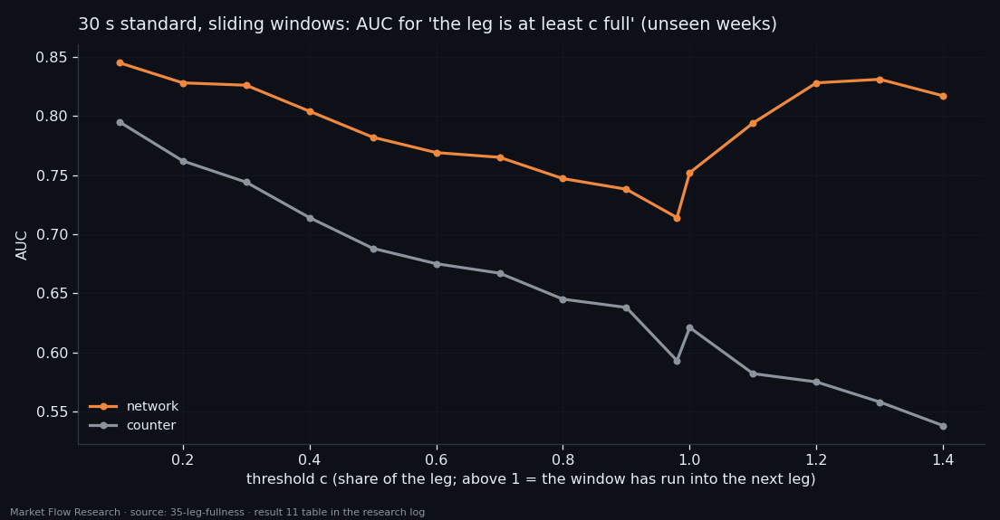
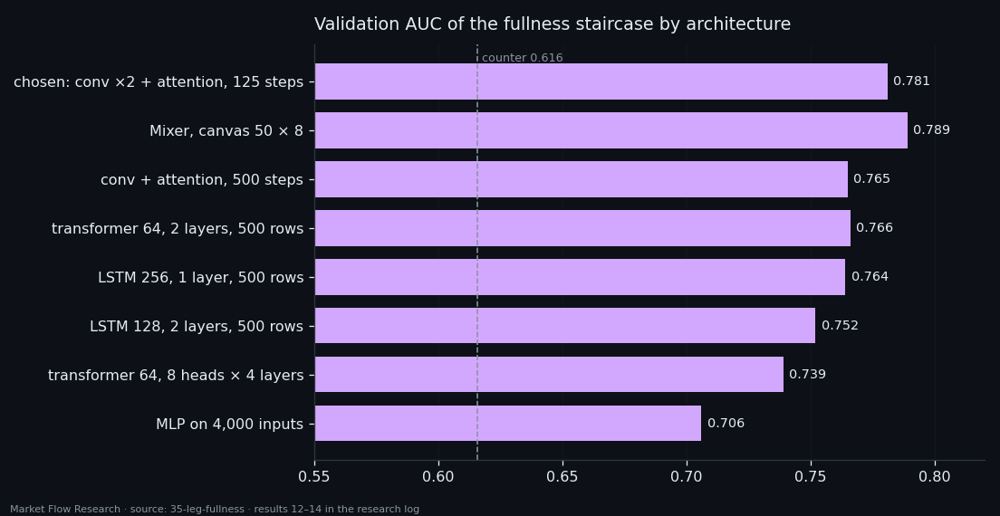

How Full Is This Leg? A Network That Finally Beats the Counter — by Reading Its Last Rows
Give a network the unfinished leg — everything from the last confirmed pivot to now, as one fixed-size canvas — and ask how complete it is. For the first time in this series a model beats the simple counter of events since the pivot on unseen weeks: fullness AUC 0.77 against 0.70, error 0.18 against 0.24. The surprise is where the knowledge comes from: the last 16 rows of the canvas do as well as all 500. On a 30-second standard with sliding windows the gap widens (0.78 vs 0.62), and the network locates a pivot inside its window with AUC 0.96. What it still cannot do cleanly is call "the leg is over" live: nine of ten such signals miss.
① The edge of a correction looks like the edge of a leg
Study 26 tried to estimate how much of its leg an event has travelled and could not beat the constant 0.5; a counter of events since the confirmed pivot was the bar nobody cleared. This study changes the input. The network gets the unfinished leg itself — every event from the confirmed pivot to now — and says how full it is: 0 at the start, 1 at the end. Six coins, `210×10-1×7d/d`, split by date (603 legs train, 106 validation).
The first stage mapped the roles of events inside a leg: its start, its end, and both edges of every internal correction. Leg edges stand out from the body clearly (AUC 0.72–0.81, the same sign on all coins and on validation). The edges of corrections carry the same signature, weaker — the difference between a reversal edge and a correction edge is only 0.07–0.11 of AUC. So fullness cannot come from one event; it has to come from the sequence: how many such edges there were and how much move lies between them. The number of corrections behind is causally known and travels with fullness.

② A canvas of the whole leg — and the last rows carry it
Legs range from tens to thousands of events, so the prefix is laid onto a fixed canvas: the class is recomputed from second-by-second data at whatever step makes the prefix fit 500 rows × 9 blocks × 7 features — a long leg is compressed, a short one stretched.
On unseen weeks the network beats the counter, and the bootstrap over legs does not cover zero: fullness AUC 0.768 vs 0.699, share error 0.184 vs 0.237 (the constant: 0.271). But a control network that sees only the last 16 rows of the canvas — the last 3.2% of the prefix — does the same or better (0.784, 0.183); every difference between them covers zero. What the network knows about fullness it reads from the end of the prefix. The shape of the whole leg adds nothing. And the hardest case stays hard: a prefix cut at the edge of a correction gives 0.67, against 0.80–0.83 at random points.
A second setup moved to a 30-second standard with sliding windows that may run into the next leg, with outputs as a staircase of thresholds. Here the full canvas does beat its tail by 0.10 (0.781 vs 0.682): a window that crosses into the next leg carries the pivot inside the canvas, and only the whole canvas shows it. The network beats the counter on every threshold and every coin; the gap is widest where the counter is helpless — windows that overshot the leg (0.79–0.83 vs 0.54–0.58). It also finds which row of the canvas holds the pivot with AUC 0.960 (counter 0.639). The weakest point is the boundary itself: 0.714 at 98% full, 0.752 at "100% or more".

③ No architecture beats the compressed canvas — and live calls still miss
The next round removed the compression: the canvas fed whole, 500 rows, to attention with no stride; to LSTMs and transformers as a sequence; to an MLP on 4,000 inputs; to MLP-Mixers. Compression loses nothing. Uncompressed attention is not better (0.765 vs 0.781), the big MLP overfits from its first epoch, the best LSTM and transformer reach 0.764–0.766, and a deeper transformer (8 heads × 4 layers) is worse on validation (0.739). A Mixer on a more compressed 50 × 8 canvas draws level with the chosen model (0.789 vs 0.781, one run, one seed). An input mask for dead rows is unnecessary — the network sees seven zeros anyway.
The last stage asked for pivots directly: a zone "the leg is over" (95–105% of its duration, within 10% of its price range), marked on every row. On validation windows precision is 0.14–0.16, three times the 0.055 of a random row, with recall 0.20–0.38. Run live over the unlabelled series, precision drops to 0.08–0.10: 3–10 times more signals than pivots, nine of ten outside the zone. A 12-point grid of penalties for misses and false rows moved only the height of the output (99th percentile from 0.12 to 0.94) — precision stayed at 0.14–0.16 in every variant. The weights change how loud the network is, not how well it separates. That is where the final study of this series starts: a longer canvas around the leg, and the pivots themselves as the target.

Reproduce this study
- Research log (.md, Ukrainian): goal, data, plan, scripts, every confirmed stage and table — enough to rerun the study
- Reproduction kit (.zip): the study's scripts, project rules and base scripts that build every class
If this changed how you read the tape, the natural next step is Volume Is the Fuel — Not the Steering Wheel — We recorded the Binance order book every second for six coins over five months and ran eighteen tests on what volume really does.
Volume Is the Fuel — Not the Steering Wheel
We recorded the Binance order book every second for six coins over five months and ran eighteen tests on what volume really does.
About Market Research Lab — What We Collect and Why
Most market commentary is storytelling.
From Calm to Calm: a Standard for What Counts as a Signal (BTC)
We stopped defining market signals with a stopwatch.
The Wall That Goes Quiet: What Resting Liquidity Predicts
We measured resting limit liquidity sitting on both sides of the book second by second across six coins, and asked the only question that matters:….
Comments
Discussion is powered by GitHub. Enable it by adding secrets/giscus.json (repo IDs from giscus.app).